Spotify already knows how to make a mix feel like yours. Desktop even has a friend-activity rail if you know to click the tiny person.
← All work
Product redesign · Solo
Spotify Social Hub
Spotify is excellent at personal mixes and weak at sharing them. This study asks what happens if recommending a song stays inside the app — as a post, a comment, or a drop onto a friend’s playlist.
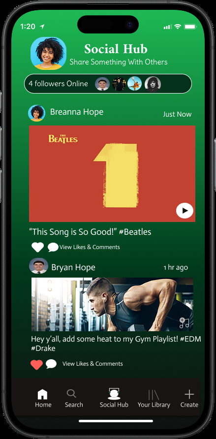
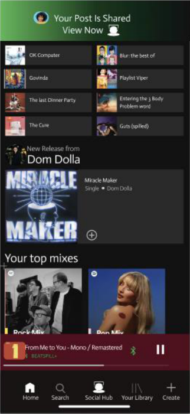
On mobile, sharing a track usually means leaving. Copy link, Messages, TikTok. The moment moves, and the conversation does not come back.
A native Social Hub: post a song with a caption, react in-thread, and add a track to someone’s playlist without a side quest.
The problem
I use Spotify daily. Curated mixes, AI radio, a home that feels like a living room — and then a share path that asks you to become a courier. Mobile users copy a link or hand the song to Instagram, iMessage, or TikTok, where it gets buried. The recipient often lands outside the app. The interaction ends.
Desktop can show what friends are listening to. Mobile mostly shows their playlists. In-app Messages already exists, but it lives behind the track ellipsis or a profile tap. It behaves like a forgotten feature, not a place.
The brief I wrote for myself: stop making the user leave in order to recommend music. Keep playback, context, and follow-up in the same house.
-
Current journey
Leave the app
Find a song → Now Playing → ⋯ → Share → Spotify Messages, copy link, or a third-party app. The recipient gets a link. Discussion, if it happens, happens somewhere else.
-
Redesigned journey
Share in Spotify
Same start. Share opens with Social Hub first. Compose a caption, post, get a quiet toast, open the hub, comment, or drop the track onto a playlist. Messages stay, but they are no longer the only native path.
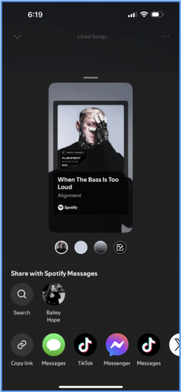
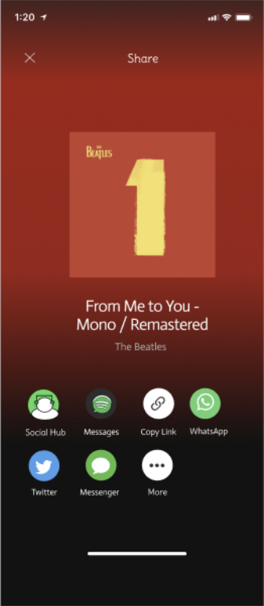
What I owned
This was a solo redesign. I mapped the current share journey, sketched the Social Hub with an action / goal / emotion note on every frame, and took the flow to a hi-fi Figma prototype: compose, feed, comments, add-to-playlist, and a Create sheet that surfaces listening rooms instead of hiding Jam.
I did not invent a live product, and I did not pretend Messages was missing. The work is about making sharing a first-class place — a fifth tab — without turning Spotify into a social network that competes with listening.
The product
Social Hub sits in the center of a five-tab bar. Home still looks like Home. After you post, a toast says “Your Post Is Shared / View Now.” Presence — “4 followers online” — is there so sharing feels timely, not performative.
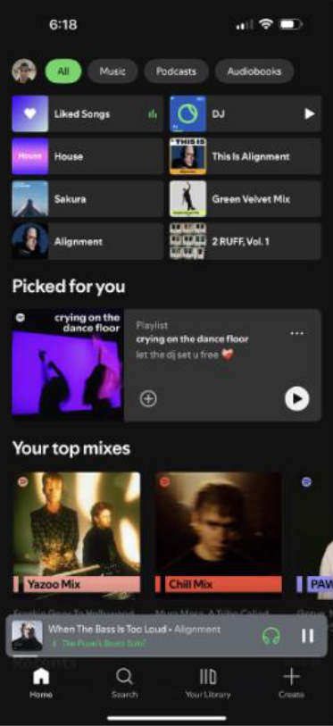
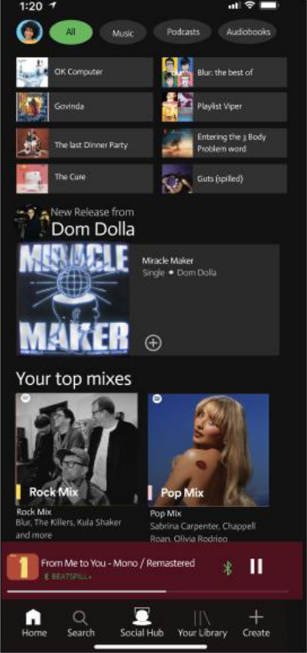
Compose, then post
Share to Social Hub is a sheet, not a new app. The song card is already there — Beatles, From Me to You — with a caption field and a Post control. Type “This Song Is So Good! #Beatles.” You are still in playback. The keyboard is the only extra surface.
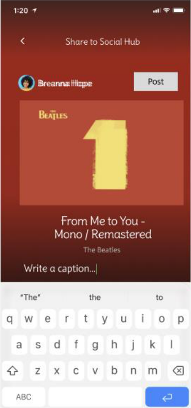
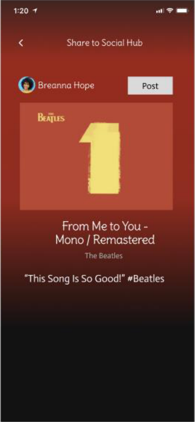
A feed that does something
The hub is not a screenshot dump. Breanna’s Beatles post can be liked and commented. Bryan’s gym playlist asks you to add heat — #EDM #Drake — so a post can write into a library. Fisher and Dom Dolla’s live mix has Tune In, which is Jam / Listening Room pulled onto the same surface instead of living in a menu nobody opens.
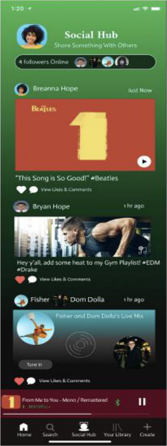
Comments stay on the song
Open likes and comments and the album stays on screen. Fisher writes “How we feeling baby!” Breanna replies “Groovy.” Like and delete live on the thread. You do not have to jump to Instagram to finish the sentence.
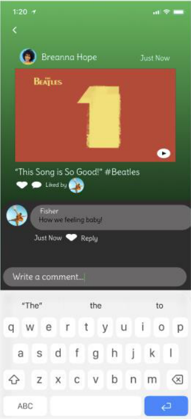
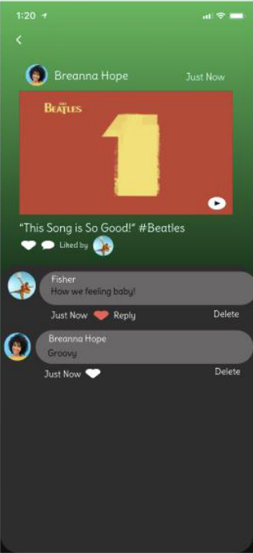
Playlist as a social object
From a post you can add the track to a playlist. Done writes “Successfully Added Song” on Bryan’s collaborative Lifting Playlist. Collaborator avatars sit on the rows so you can see who dropped Miracle Maker. That is the most product-y idea in the set: a caption that changes the library.
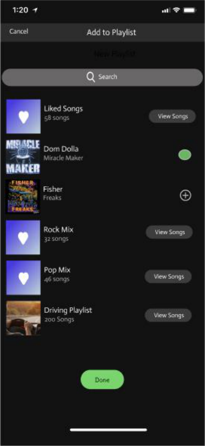
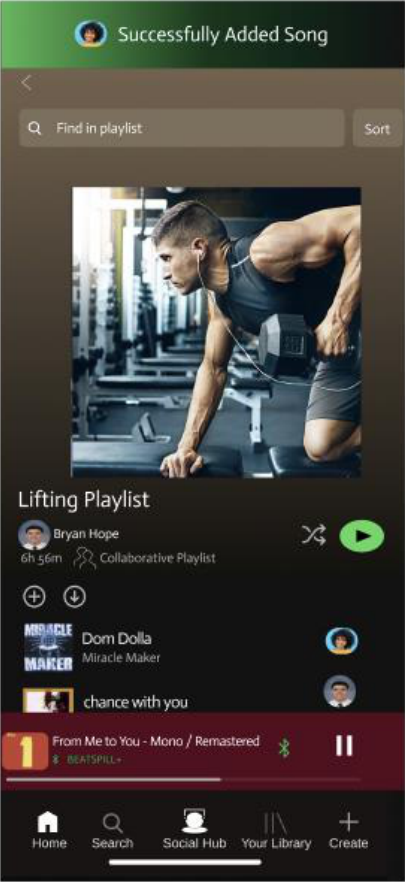
Create without hunting
The plus tab opens one sheet: playlist, collaborative playlist, Mix / Listening Room, or create a post. Listening Room is Jam with a public face — queue together, hosted on the feed. I also sketched a Shared with Me library in the rationale; the hi-fi spends its pixels on the feed and the create sheet first.
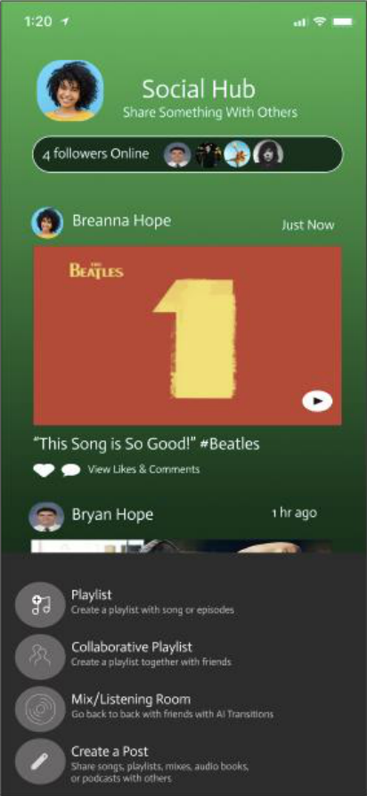
Design decisions
-
01
Don’t compete with listening.
The hub is a tab, posting is a sheet, Now Playing stays put. If social becomes the home screen, the product identity slips. Spotify should still feel like a stereo that happens to have friends in the room.
-
02
Make Share in Spotify the default path.
Copy link and TikTok can stay. They should not be the first thing the sheet teaches you. Social Hub first, then Messages, then the exits.
-
03
Playlist as a social object.
A gym-playlist prompt that other people can add to is more useful than another caption under art. The feed should be able to change the library.
-
04
Notifications that respect attention.
“Your Post Is Shared” is a toast, not a takeover. I wanted confirmation without training people to swipe away noise. Privacy is the hidden requirement sitting under all of this — listening visibility has to be a first-class setting before a hub like this could ship.
How I got there
I started with the current mobile journey — ten taps from Home to a forgotten Messages thread — and marked every time the product asked me to leave. Then I redrew the same job with Social Hub as a place: Home, Now Playing, Share to Social Hub, compose “This song is so good!!”, the feed, an ellipsis for Repost / Message / Like, and a DM to Bailey that still carries the song card.
Each sketch frame got an action, a goal, and an emotion. That kept the hi-fi honest when it was tempting to add another row of icons. Typography stayed on Spotify’s type scale so the hub would read as part of the app, not a skin. Color marks state and priority — the green toast, the selected chip — instead of decorating the feed.
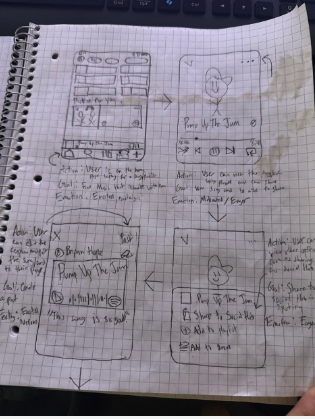
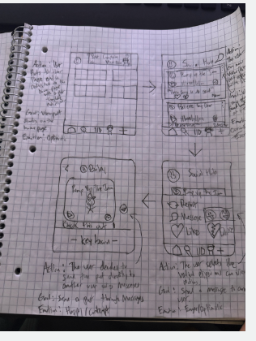
-
Map
Current share
Home → player → ⋯ → Share → leave. Messages exists and still feels hidden.
-
Sketch
A place, not a link
Action / goal / emotion on every frame so the hub had a job besides looking social.
-
Build
Raise fidelity
Compose, toast, feed, comments, add-to-playlist, Create — in Spotify’s own type and dark UI.
-
Check
Can they find it?
Usability passes on discoverability: sharing should not live in Settings, or behind a profile you never open.
What I made
A hi-fi mobile prototype of a native sharing layer: a fifth tab, a compose sheet, a feed that can comment and write into playlists, and a Create menu that puts listening rooms on the same surface. There is no live Spotify feature to open — the Figma file is the artifact.
- Scope
- Solo product redesign
- From
- Current share journey
- Through
- Annotated lo-fi flows
- To
- Interactive mobile proto
What I learned
Familiar patterns — tab bars, toasts, comment threads — do the heavy lifting. The work was deciding what not to add. A hub that shouts will lose to the Now Playing bar. A hub that only captions will lose to iMessage. The useful middle is a post that can become a playlist row, and a notification that confirms without taxing attention.
If I continued, I would design listening visibility before another feed widget: who can see that you are online, what “Shared with Me” keeps, and how a Listening Room dies when the night is over. Accessibility is not a later pass here — contrast and type size are why the hub can sit on a dark gradient and still be readable in a bright room.